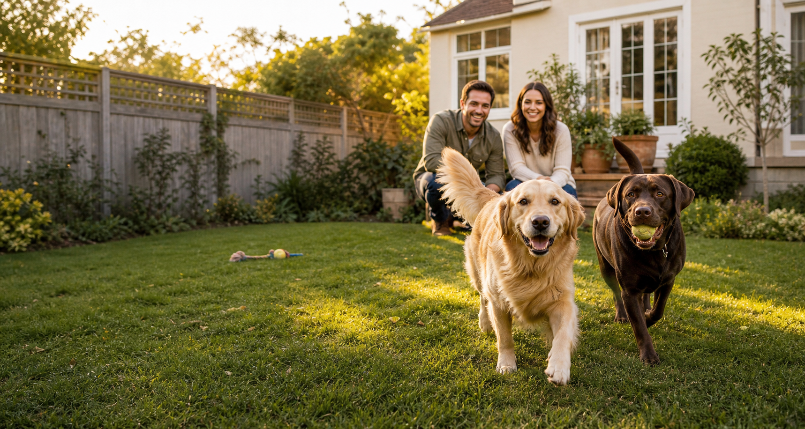
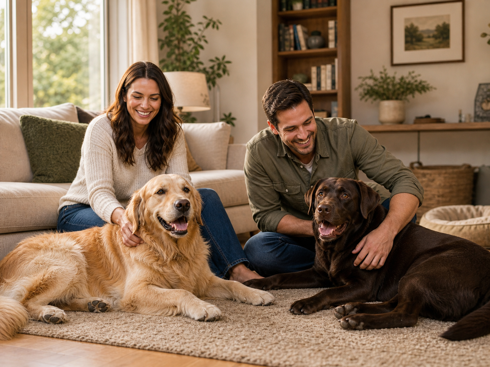

A calm, cosy home
Comfortable indoor spaces to play, nap, and settle—plus a secure garden for supervised outdoor time.
Small-group dog boarding · Bengaluru
Warm, attentive boarding in a real home—cosy naps, happy walks, supervised play, and plenty of affection from a dog-loving couple.
Care from the same two people, every day.
No hand-offs. No crowded kennel rows.

Home, not a kennel
Your dog is family, and that is exactly how they will be treated here. Tales of Us is a calm, homelike alternative to busy kennels, with familiar rhythms and thoughtful care tailored to each guest.
See what every stay includesComfortable indoor spaces to play, nap, and settle—plus a secure garden for supervised outdoor time.
Walks, meals, medication, sleep, and quiet time shaped around the routine your dog already knows.
Two photo or video check-ins a day, so you can see the happy face behind every “doing great.”
A day at Tales of Us
We follow your dog's usual routine and adjust each stay to their energy, comfort, and personality.
A comfortable balance shaped around your dog's age, energy, and favourite way to spend the day.
Meals, medication, sleep, and quiet time follow the instructions and comforts they know from home.
Photo and video updates let you see that they are relaxed, cared for, and enjoying their stay.
Overnight boarding
Sample rate · final price confirmed after your meet-and-greet. Owners provide their dog's usual food.
Ask about your datesEvery overnight stay
All rates shown are illustrative and should be replaced with the business's confirmed pricing.

Your hosts
Hi, we are Tanbir and Rishika. Tales of Us began with a simple idea: dogs should feel safe, loved, and completely at home while their people are away.
We manage every stay personally—from the first morning walk to the last bedtime cuddle. Our guest list stays intentionally small, giving each dog the time and space to settle.
Walks, enrichment, garden games, and champion sofa-nap supervision.
Meals, medication, settle-in plans, and expert ear scratches.
Notes from the humans
Illustrative review cards are shown below to demonstrate the finished layout. Replace every quote with a genuine, approved customer review.
“Bruno settled in almost immediately. The daily pictures made us smile, and he came home relaxed and happy.”Sample testimonial
“It felt like leaving Maple with trusted friends. She loved the garden, the walks, and all the attention.”Sample testimonial
“They understood Oscar's routine perfectly. This was the first trip where we genuinely did not worry.”Sample testimonial
A thoughtful first step
Share your dates, routine, temperament, health needs, and favourite things.
Visit the home, meet us, and let your dog explore at their own pace.
Once everyone feels comfortable, reserve the dates and receive a packing list.
Relax while your dog enjoys their own holiday and you stay close through photos.
Good to know
Every first stay begins with a conversation. These answers cover the basics; care details are always agreed dog by dog.
Ask another questionPlease bring your dog's regular food, lead and harness, any medication, vaccination records, and one familiar blanket or toy. Keeping food and small comforts familiar helps dogs settle more easily.
Dogs sleep indoors in a comfortable setup suited to their normal routine. We agree the sleeping arrangement during the meet-and-greet, and you are welcome to bring their usual bed.
Yes, after an individual care assessment. Tell us about toilet routines, mobility, medication, sleep, and any extra support so we can decide together whether our home is the right fit.
Yes. A complimentary meet-and-greet lets your dog explore the home, meet us, and helps everyone feel confident before a stay is confirmed.
Guest dogs should be up to date with vaccinations and flea and tick treatment. We review health, temperament, emergency contacts, and veterinary details before arrival.
We contact you or your nominated emergency person immediately and seek veterinary care according to the written authorisation collected at check-in. Final emergency procedures should be confirmed before launch.
Check available dates
Tell us your travel dates and a little about your dog. The first step is simply a friendly, no-pressure conversation.
These contact details are intentionally non-working demo placeholders. Replace them before sharing the site with customers.